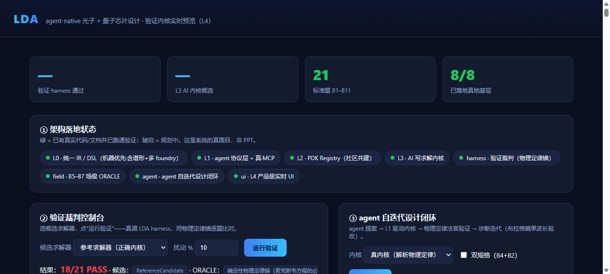
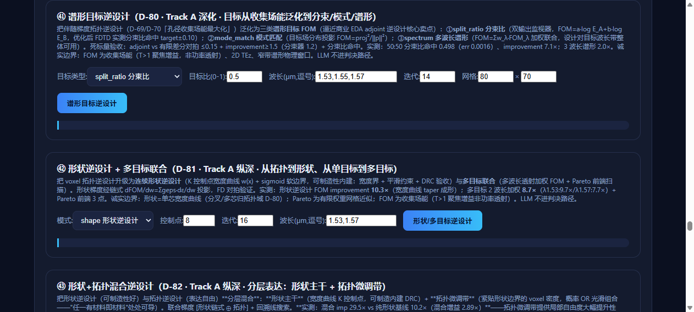
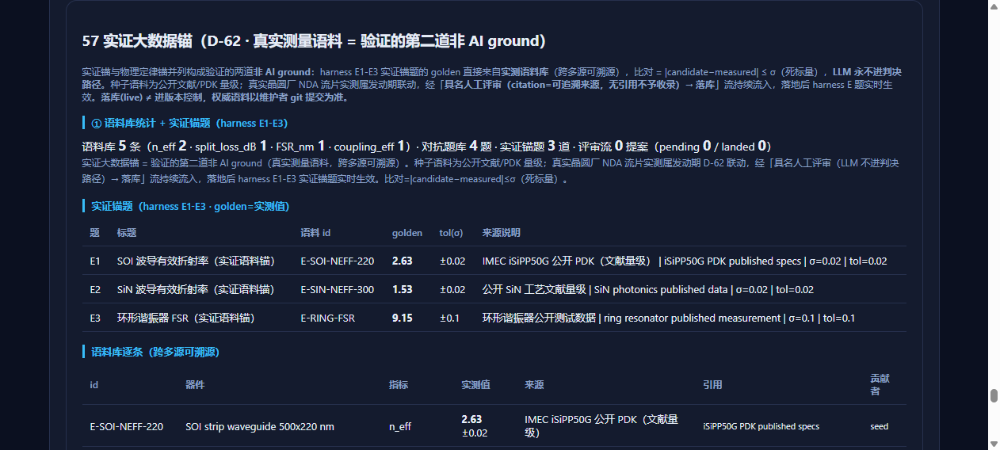
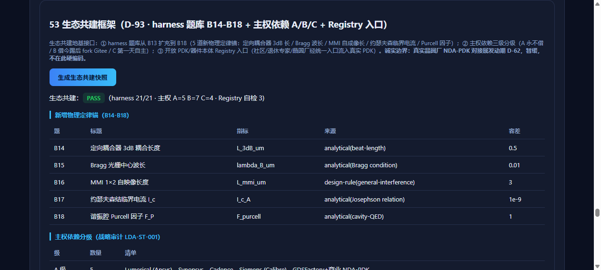

| 案例 | 目标 | 结果 |
|---|---|---|
| 1550nm 1×2 MMI 均分分束器 | 50:50 分束，5 波长谱形验收 | 平衡度 0.0335（阈值 0.15），PASS |
| E_J=15GHz transmon 读出设计 | f01 + 色散读出（χ/n_crit/Purcell） | f01=5.214GHz，χ=-0.88MHz，4 判据全过 |
| 谱形目标逆设计 | 3 波长目标谱，自动搜几何 | FOM 加权 15.68×，adjoint 对拍零误差 |
📖 《LDA 器件开发实操手册：MMI + Transmon + 逆设计》（中文 v2.0）
📖 Device Design Handbook: MMI + Transmon + Inverse Design (English v2.0)
🔗 GitHub 仓库 · README · MIT License



